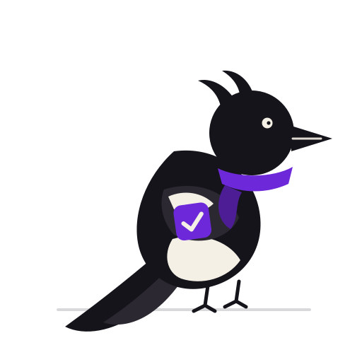

current · v1
Round, friendly, ambiguous

21096
44
24
Why it reads as a duck:
- body is round and wide, like a duck
- neck disappears into the body
- tail is short at reading size; it merges with the body
- white belly dominates; the white shoulder patch is a thin sliver
- the beak is short and soft